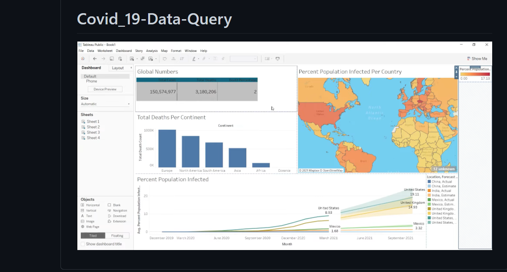

Covid 19 DataQuery
COVID-19 open-access data and computational resources are being provided by federal agencies, including NIH, public consortia, and private entities. These resources are freely available to researchers, and this page will be updated as more information becomes available.
The Office of Data Science Strategy seeks to provide the research community with links to open-access data, computational, and supporting resources. These resources are being aggregated and posted for scientific and public health interests. Inclusion of a resource on this list does not mean it has been evaluated or endorsed by NIH.
Technologies:
- - Python
- - SQL
- - TABLEAU
- - Postgres
- - My SQL Workbench